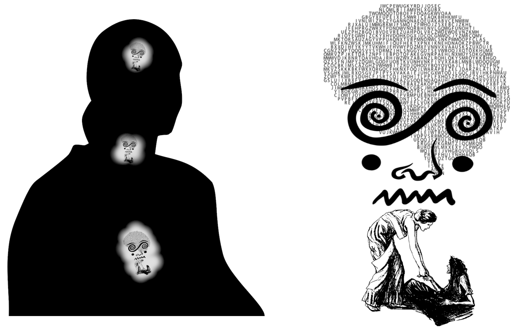

Wprowadzenie
Opisanie procesu transmutacji wymaga wprowadzenia kontekstu tego w jaki sposób skomponowana jest perspektywa ludzkiego ciała. To co jestem w stanie napisać na ten temat jest dużym uproszczeniem - niemniej jednak pomimo tego może być pomocne. Poniższe podrozdziały streszczają podstawowe informacje na temat struktury indywidualnej perspektywy (tego w jaki sposób czujemy, że jesteśmy "sobą") oraz modalności funkcjonowania, które można nazwać "poczuciem oddzielenia", "transcendowaniem" oraz "przebudzeniem". Te podstawowe informacje służą jako tło dla rozdziału, który bardziej szczegółowo opisuje proces transmutacji w kontekście niedualnej ewolucji.
Struktura indywidualnej perspektywy ⚓
Indywidualna perspektywa jest kompozycją warstw:
Myśli (ludzkie ego)
Emocji (ludzkie ego)
Struktur Świadomości (z włączeniem impresji oddzielenia)
Niedualnych Modalności
Źródła (Czysta Boskość)
Tak na prawdę, Źródło jest jedynym faktycznym Podmiotem wszelkiej subiektywności. Niemniej jednak, w przypadku ludzkiego ciała, poczucie "ja" jest efektem superpozycji impresji oraz identyfikacji, które przesłaniają oraz wiążą perspektywę Boskości. Myśli i emocje są pochodnymi impresji poczucia oddzielenia, które są zapisane w subtelniejszych warstwach Pola Świadomości (np. "astralnej" i "przyczynowej" w konwencji [3]). Niedualne Modalności oraz Źródło (odniesienia [1-2]) to sfera wolności od identyfikacji z impresjami poczucia oddzielenia. Komponent Ego jest współobecny w podziałach Pola Świadomości na szczegółowe formy - od skal kosmicznych do form takich jak ludzka fizjologia. Ludzkie ego to Ego zawężone do identyfikacji z impresjami, myślami, emocjami oraz ciałem człowieka.
Poczucie oddzielenia ⚓
Ludzkie "ja" jest efektem liniowego przetwarzania w Polu Świadomości. Podczas gdy Świadomość jest nieliniowa - nie sekwencyjna - charakteryzująca się jednoczesnością przetwarzania - ludzkie ego jest wyrazem liniowości: Inteligencja Boskości zidentyfikowana z ludzkim ciałem zawęża percepcję do spektrum liniowego przetwarzania - co uzewnętrznia się poprzez język oparty na sekwencjach symboli. Całościowe postrzeganie przysłaniane jest warstwą mentalnego przetwarzania, w której pojawia się optyka "siebie" i "nie siebie". Znaczeniowe "ja" rozgałęzia się w mentalno-emocjonalne tożsamości, których ludzkie ego staje się obrońcą i właścicielem.
Przetwarzanie myśli i emocji w identyfikacji z ciałem odkłada (zapisuje) impresje w subtelnych warstwach Pola Świadomości. Jednocześnie myśli i emocje są pochodnymi już istniejących impresji. Kolektyw ludzkich ciał funkcjonuje jako system recyrkulacji impresji poczucia oddzielenia - symbolicznie odgrywając wersje komunikacji opartej na percepcji oddzielności - które jednocześnie zasilają i są zasilane nagromadzeniem subtelnych impresji.
Transcendowanie ⚓
Transcendowanie to odrywanie się Świadomości od liniowego przetwarzania ludzkiego ego. Każda fizjologia jest zdolna do transcendowania - jest ono naturalnym (nie zauważanym) elementem codziennego funkcjonowania. Świadomość, która obserwuje przepływ myśli, emocji oraz subtelnych odczuć bez znaczeniowego przywiązania do nich jest "transcendująca". Naturalne, oderwane obserwowanie zwrócone ku głębi niewerbalnego odczuwania jest "transcendujące".
Przebudzenie ⚓
Przebudzenie jest spontanicznym, trwałym oderwaniem się Świadomości od liniowego przetwarzania ludzkiego ego. Poczucie siebie przestaje być zdefiniowane w mentalno-emocjonalnych konstrukcjach i nabiera charakteru uniwersalności Pola Świadomości - w stopniu który wyraża się indywidualnie poprzez dane ciało (Rysunek 1). Przebudzona perspektywa zawiera odruchowość utożsamiania się oraz zdolność transcendowania. Niemniej jednak, Świadomość wraca do naturalnej dominacji nieliniowości nad identyfikacją z ludzkim ego. Migracja znania siebie poprzez Niedualne Stadia oraz urzeczywistnienie Czystej Boskości są kontynuacją oraz kulminacją wstępnego przebudzenia [1-2] (klaryfikacja perspektywy ciała nie ma końca).
Rysunek 1: Ilustracja poczucia oddzielenia (po lewej) oraz przebudzenia (po prawej). W modalności poczucia oddzielenia Pole Świadomości
identyfikuje się z warstwami impresji oraz ciałem. W modalności przebudzenia Pole Świadomości dominująco identyfikuje się ze swoją własną
naturą poza warstwami impresji oraz funkcjonalnie identyfikuje się z ciałem (impresje postrzegane są jako impresje).
Transmutacja
Identyfikacja ⚓
Identyfikacja, albo utożsamianie się, jest u podstawy powstawania optyki oddzielenia. Komponent Ego Świadomości jest meta-funkcją, która umożliwia powstanie perspektywy podmiotu i przedmiotu doświadczenia wewnątrz niedualnej perspektywy Boskości. Poprzez podziały i permutacje powstaje pozorna mnogość fizjologii wewnątrz samo-podobnej przestrzeni Pola Świadomości. Każda fizjologia jest jak punkt w kalejdoskopie, poprzez który patrzy oko Niedualności. Punktu widzi własną indywidualność oraz wielość - Niedualność, która jest przed wyłonieniem się Ego - widzi Siebie. "Ja" punktu jest zawężeniem Światła Boskości - świadomość siebie punktu jest Świadomością Boskości pozornie związaną spontanicznym samo-uprzedmiotowieniem.
Cierpienie ⚓
Fundamentalnie, cierpienie jest wyrazem niestabilności liniowej identyfikacji. Stopień cierpienia jest w proporcji do stopnia identyfikacji z mentalno-emocjonalnymi konstrukcjami liniowej tożsamości - zasilanymi impresjami zgromadzonymi w Polu Świadomości. Każde ciało wyraża jakąś porcję kolektywnych impresji poczucia oddzielenia oraz dozę dodanej tożsamości - nagromadzonej w sekwencyjnym przebiegu aktywności ciała w identyfikacji z ludzkim ego. To, że cierpimy jest nieuchronne - tak długo jak długo ciało funkcjonuje w dominacji poczucia oddzielenia. W byciu zdefiniowanym w sekwencjach znaczeń naruszanie identyfikacji jest nieuchronnym aspektem funkcjonowania poprzez ciała wchodzące w relacje poprzez sekwencje znaczeniowych symboli.
W praktyce cierpienie pozostaje częścią ludzkiego doświadczenia w dominacji poczucia oddzielenia oraz - w mniejszym stopniu - w Stadiach niedualnej ewolucji. Nasze jednostkowe cierpienie jest wyrazem dotykania w sobie tych nagromadzeń impresji, które pozostają w aktywnej partycypacji w inkarnacji naszego ciała. Każde ciało może indywidualnie być w trybie kumulowania impresji - doświadczania w dominacji identyfikacji - lub w trybie ich transmutacji. W Stadiach niedualnej ewolucji - wraz z transmutacją impresji - poczucie podmiotowego cierpienia stopniowo znika z subiektywności ciała.
Proces transmutacji ⚓
Transmutacja to proces dekompozycji zadawnionych impresji. Tak jak wszystkie obiekty w Świadomości, ślady doświadczeń podlegają procesom kreacji i dekonstrukcji. Podczas gdy doświadczanie w konwencji oddzielenia przyczynia się do kreacji zaburzeń równowagi - transmutacja przyczynia się do ich dekompozycji. W pełni przetworzone doświadczanie nie zostawia impresji. Niemniej jednak poprzez nagromadzenie nierównowagi - ludzkie doświadczanie zdominowane jest spontanicznym wytwarzaniem oraz powielaniem impresji oddzielenia.
W naszym intymnym doświadczeniu transmutacja to przebywanie uwagą z dyskomfortem odczuwanym w ciele. Nie osądzające. Nie angażujące "ja". Transcendujące. Cierpienie może mieć wiele pozornych źródeł - np. możemy czuć się skrzywdzeni "przez kogoś" na wiele rozmaitych sposobów. Dyskomfort odczuwany w ciele może wydawać się być odzwierciedleniem mentalno-emocjonalnych turbulencji powiązanych z określonym w czasie zdarzeniem. Bez względu na znaczeniową opisowość tego - cierpienie zawsze wyraża naruszenie form tożsamości, które stanowią budulec ludzkiego "ja". Transmutacja to transcendujące przebywanie z odczuwanym dyskomfortem w polu uwagi, kultywowane jako świadoma aktywność.
Ciało a transmutacja ⚓
Ciało jest zagęszczeniem Pola Świadomości, zawartym w Niedualnej Boskości. Odczuwanie dyskomfortu w ciele jest odczuwaniem Świadomości w Świadomości. To co postrzegane jest jako fizyczne ciało jest superpozycją subtelności wyrażania się ciągłości ciała rozpiętego pomiędzy Boskością a punktem ludzkiego ciała. Tak jak fizyczne ciało złożone jest z organów - tak subtelniejsza fizjologia zawiera włókna oraz przestrzenie o funkcjonalnej wartości. Ludzkie ciało jest lustrem - reflektorem tego co zapisane jest w abstrakcyjnym repozytorium impresji, które składają się na jego inkarnację. Odczuwanie impresji w ciele jest odczuwaniem impresji zgromadzonych w Polu Świadomości jako Całości.
Proces transmutacji podlega spontanicznej rafinacji, tak jak każda aktywność której poświęcana jest uwaga. Efektywna transmutacja nie wymaga znajomości szczegółów orkiestracji ciała. Niemniej jednak intelekt zyskuje ogólną orientację wraz z pogłębianiem się procesu transmutacji. W przestrzeni transmutacji ciało otwiera się w głębię, która charakteryzuje się gradacją tonalności. Impresje mogą być odczuwane w dowolnym punkcie lub regionie ciała (mapowane na nie - Rysunek 2) - tonalność impresji poprzez głębię transcendującego przebywania otwiera się w analogiczny sposób niezależnie od miejsca ich mapowania (np. poprzez centra głowy, serca i brzucha, lub inne miejsca).

Rysunek 2: Zestawienie impresji (śladów doświadczeń), emocji i myśli może być odczuwane w różnych miejscach ciała. Ciało działa jak lustro odzwierciedlające impresje.
Efektywna transmutacja ⚓
W dominacji poczucia oddzielenia transmutacja może wydawać się być czynnością, która wymaga wysiłku. Poczucie "ja" wyrażające się poprzez ruchliwość ludzkiego ego angażuje się w myśli oraz emocje powiązane z odczuwanym dyskomfortem. W tej modalności doświadczania, punktem albo "krawędzią" efektywnej transmutacji jest sfera odczuwania, w której interpretacja odczuwanego dyskomfortu jako czegoś "co nam się przydarza" przechodzi w czysto bez znaczeniowe (cielesne) odczuwanie. Odpoczywanie uwagą na tej krawędzi odczuwania sprzyja efektywnej transmutacji. Rysunek 3 symbolicznie obrazuje ten proces.
W miarę rafinacji percepcji oraz rozwoju transcendowania - subiektywne postrzeganie "krawędzi transmutacji" może się zmieniać i stawać bardziej abstrakcyjne. W przypadku przebudzenia transmutacja może zacząć wykraczać poza sferę "osobistych impresji" i nabierać charakteru przetwarzania zaburzeń równowagi w szerszym polu uwagi. Podstawowy punkt efektywnej transmutacji pozostaje niezmieniony - jest nim krawędź odczuwania pomiędzy sferą interpretacji oraz sferą transcendującej wolności od interpretacji. W Niedualnych Stadiach ten mechanizm się nie zmienia - chociaż może zmieniać się percepcja "bliskości" odczuwanych impresji. Nie koniecznie też zawsze pojawiać się będzie odruch interpretacji. Przed przebudzeniem, oraz niezależnie od stadium przebudzenia, impresje mogą być odczuwane jako poczucie abstrakcyjnej identyfikacji (np. jako wibracja agitacji), transcendujące przebywanie z którym wyznacza front transmutacji.
Nie da się określić ani przewidzieć tego jaka doza danej impresji właściwa jest danemu ciału. Transmutacja tej samej impresji może kontynuować się poprzez dominację poczucia oddzielenia, wstępne przebudzenie oraz Niedualne Stadia. Wraz z pogłębianiem się perspektywy zmieniać się może charakter odczuwania impresji oraz charakter jej interpretacji. Niemniej jednak zazwyczaj dekompozycja danej impresji ewentualnie dobiega końca - w tym sensie, że w subiektywności ciała zanikają powiązane z nią interpretacje siebie. Może się to odbywać stopniowo - w oknach sposobności - lub jednorazowo. W Niedualnych Stadiach transmutacja "bardziej osobistych" aspektów impresji może przechodzić w transmutację ich "bardziej kolektywnych" ekwiwalentów - np. w kontekście relacji, które czerpią z określonych wzorców impresji (w życiu rodzinnym, w pracy, etc.).
Rysunek 3: Krawędź transmutacji symbolicznie przedstawiona jako brzeg wodospadu: liniowość przepływu (interpretacja) przechodzi w otwartą przestrzeń
(odczuwanie bez interpretacji).
Codzienne pisanie a transmutacja ⚓
Ścieżka [1] rekomenduje modalność codziennego pisania jako narzędzie wspomagające zauważanie oraz dekonstrukcję natury liniowego przetwarzania. W kontekście transmutacji codzienne pisanie (np. przewlekane okresami transcendującego odpoczywania z impresjami) ma wspomagający charakter. Często dyskomfort w przestrzeni transmutacji ma abstrakcyjny (trudny do odczytania) charakter, co może być przyczynkiem oporu prowadzącym do kondensacji nowych impresji. Praktyka pisania wspomaga dawanie głosu abstrakcyjnym odczuciom w ciele - stając się ujściem, poprzez które impresje mogą przybierać formę języka zrozumiałego w liniowym sensie. Raz zauważone znacznie może być zostawione, co wspomaga proces transmutacji oparty na czystym odczuwaniu.
Ludzkie ego a transmutacja ⚓
Ludzkie ego w naturalny sposób angażuje się w mechanizm transmutacji próbując odgrywać w nim jakąś rolę. Ludzkie "ja" postrzega siebie jako "autora" czynności ciała i w podobny sposób ma tendencje do postrzegania siebie jako "autora transmutacji" (np. chcąc nadawać jej kierunek i decydować o jej wystarczalności w odniesieniu do danej impresji lub ustosunkowując się do zjawisk obserwowanych w przestrzeni transmutacji i tworząc projekcje ich relacji do preferowanych przebiegów zdarzeń). Naturalnie również, ludzkie ego postrzega siebie jako "właściciela cierpienia" odczuwanego w ciele. Transmutacja zawiera w sobie transcendowanie ruchliwości ludzkiego ego oraz spontanicznie włącza w swój nurt impresje u podstawy owej ruchliwości. Nie da się przewidzieć rozległości transmutacji ani też określić przyczynowej relacji pomiędzy nią a przebiegiem zdarzeń - liniowe przetwarzanie nie odgrywa w niej aktywnej roli.
W Niedualnych Stadiach przebudzenia identyfikacja z odczuciami w ciele może być na tyle osłabiona, że ludzkie ego może przestawać interesować się procesem transmutacji. Niemniej jednak tok ludzkiego życia (w epizodach intensywnej transmutacji) dalej uwypukla aspekty identyfikacji, które nie podległy całkowitej transmutacji.
Przykłady zaburzeń równowagi ⚓
Impresje mogą być postrzegane z rozmaitą dozą konkretności oraz odzwierciedlane poprzez układ nerwowy na wiele sposobów. Typowe klasy impresji to:
- niedopełnione dążenia,
- nagromadzenia:
- strachu,
- osamotnienia,
- przywiązania,
- poczucia braku,
- poczucia krzywdy,
- form projekcji i obwiniania,
- inflacji i deflacji (np. dumy i wstydu),
- agitacji (ściśniętej identyfikacji),
- interpretacje siebie w rozmaitych sytuacjach,
- konglomeraty doświadczeń-emocji-identyfikacji,
Pojmowanie natury zaburzeń równowagi ⚓
Wgląd w naturę transmutacji zdarza się i bywa pomocny - np. kiedy nie rozumiemy dlaczego cierpimy. Jest czymś naturalnym z otwartym Sercem prosić o taki wgląd - dialog pomiędzy indywidualnością a Boskością jest naturalnym elementem transmutacji. Równie często, wgląd w naturę zaburzeń równowagi może pojawiać się spontanicznie, tak by być za chwilę zapomnianym. Czasem też wgląd w naturę identyfikacji z aspektami poczucia oddzielenia współtworzącymi daną impresję może pojawić się u kresu jej transmutacji. Niemniej jednak transmutacja pozostaje modalnością odczuwania w większym stopniu, niż modalnością pojmowania.
Relacje ⚓
Relacje pomiędzy punktami (ciałami/osobami) mają dwa podstawowe aspekty. Pierwszym z nich jest idealna funkcja w kontraście relacji (np. matka-syn, matka-córka, ojciec-syn, ojciec-córka, nauczyciel-uczeń, przyjaciel-przyjaciel). Drugim aspektem jest deformacja tej funkcji - jej specyficzna realizacja w kontekście impresji poczucia oddzielenia partycypujących w inkarnacji ciał. W królestwie zwierząt widzimy uproszczone idealne funkcje realizowane bliżej ich prototypowych ideałów - Pole Świadomości nie przywiązuje się do funkcji jako punktowych tożsamości w stopniu, który jest właściwy ludzkim fizjologiom. W ludzkich inkarnacjach następuje wzrost złożoności przetwarzania, który umożliwia większy stopień przywiązania i identyfikacji. Ludzkie relacje są jednocześnie wyrazem swoich funkcjonalnych ideałów - oraz wehikułem transmutacji nawarstwień impresji, które przyczyniają się do inkarnacji ciał, które je uzewnętrzniają. Ponieważ Świadomość jest nieliniowa, jest w tym jednoczesność - zazębienie się podobne do "problemu kury i jajka".
Relacje w dominacji poczucia oddzielenia mają transakcyjny charakter: "ja robię coś dla ciebie - ty robisz coś dla mnie". Dotyczy to wszystkich struktur, które tworzy ludzkie ego / które tworzą ludzkie ego - począwszy od rodziny poprzez wszystkie inne struktury społeczne. Charakteryzuje je poczucie przyczynowości - "robię coś dla ciebie bo jesteś moją matką/ojcem/bratem/siostrą/mężem/żoną/pracodawcą/pracownikiem/...", które usprawiedliwia stopnie "bezinteresowności". Wytłumaczenie natury relacji polega na przyjęciu konwencji w ramach percepcji współzależności instynktu przetrwania - w spektrum, które rozpina się pomiędzy bezpośrednim zabezpieczaniem ciała a przystawaniem na wspólne systemy myślenia. Interesowność ludzkiego ego w relacjach jest wciąż na nowo przekraczana w Stadiach niedualnej ewolucji - niemniej jednak funkcjonalna wartość relacji, która przekłada się na merytoryczność działania w konwencji ludzkiego życia, zachowuje swoją rolę.
W przestrzeni transmutacji jesteśmy w relacji ze głębią odczuwania w sobie. To jedyna stała relacja w jakiej jest ludzka fizjologia. W procesie transmutacji przetwarzane impresje zazwyczaj wydają się mięć związek z rozgraniczeniem pomiędzy percepcją siebie i kogoś. Kontrastowość poczucia oddzielenia uwypukla się w kontekście percepcji naruszonych granic. To co było powiedziane wczoraj, wydaje się nieść w nas dzisiaj, w postaci kontekstowej interpretacji siebie oraz ładunku odczuć i emocji. Możemy chcieć mieć rację w danej sytuacji, albo możemy mieć wrażenie ulegania racji innych osób. Możemy chcieć czegoś od kogoś, lub ktoś może wydawać się chcieć czegoś od nas. Możemy się na coś godzić lub nie godzić - na wiele rozmaitych sposobów. Instynkt przetrwania wchodzi w relacje na zasadzie odruchowości zysków i strat w odniesieniu do własnej integralności. Naruszenia integralności odzwierciedlane są jako formy cierpienia.
W dominacji poczucia oddzielenia zdolność transmutacji może wydawać się być sposobem na "radzenie sobie" - podczas gdy prawda optyki oddzielenia wydaje się być "obiektywna". Po przebudzeniu - stopniowo - obiektywność "siebie i kogoś" zastępowana jest Prawdą Niedualności. Transmutacja staje się spontanicznym procesem aktualizacji Tej Prawdy w dekonstrukcji integralności instynktu przetrwania. Bez dominacji odruchowości przetrwania, ludzka fizjologia zaczyna naturalnie wyrażać głębsze wartości, takie jak równowaga i współczucie. W dojrzałych Niedualnych Stadiach - wraz z ich uzdrawianiem się - relacje stają się naturalnym kontekstem dla przepływu bezwarunkowej Miłości - oraz równie często - dla przepływu Współczucia względem Siebie tam, gdzie perspektywa wciąż schwycona jest w percepcji współzależności ludzkiego ego. Wiele też zmienia się, kiedy poprzez naszą perspektywę na ludzkie życie zaczyna patrzyć Boska Miłość - wiele z tego o czym tutaj piszę przestaje być adekwatne - relacje zaczynają być widziane jako tkanina Miłości Samej w Sobie - pomimo ich niedoskonałości - z całym dobytkiem tego, co niesie w sobie poczucie oddzielenia.
Seksualność ciała ⚓
W ewolucji ludzkiego ciała, sfera seksualności należy do najintymniejszych punktów identyfikacji oraz sfer obronności ludzkiego ego. Wiąże się też ona z pokładami zbiorowych impresji powiązanych z różnymi formami poczucia niedopełnienia, szukania spełnienia w seksualności, oraz z rozmaitymi formami jej deformacji. Jednocześnie seksualność ciała pozostaje aktywna w niedualnej ewolucji - również w sferze transmutacji. Jest czymś naturalnym, by ruch energii powiązany z transmutacją impresji w sferze seksualności, był w korelacji z aktywacją seksualności fizycznego ciała, lub też aktywacją subtelnego mechanizmu seksualności na czysto energetycznym poziomie. Identyfikacja z fenomenalnym wyrażaniem się seksualności jest stopniowo transcendowana w Niedualnych Stadiach przebudzenia - ale zanim w tej sferze pojawia się komfort, transmutacja impresji powiązanych z seksualnością może wchodzić w interakcje ze szczątkową identyfikacją z seksualnością ciała. Kluczowe w tej sferze mogą być impresje wczesnego kształtowania się seksualności w polaryzacji relacji z rodzicami/opiekunami - ale również specyficzny bagaż impresji o ogólniejszym charakterze, który na rozmaite sposoby odzwierciedlany jest w symbolach i tendencjach aktywujących seksualność w dominacji liniowego przetwarzania.
Kolektywne impresje ⚓
Ludzkie ciało i inkarnacja są skorelowane z istnieniem kolektywnych impresji poczucia oddzielenia. Repozytorium impresji zawiera pokłady nagromadzeń identyfikacji oraz odczuć, które mają uniwersalny charakter. Kiedy perspektywa ciała przestaje być ściśle związana z liniowym przetwarzaniem, w przestrzeni transmutacji mogą pojawiać się impresje, które wykraczają poza sekwencyjną historię danego ciała. W miarę stabilizacji Niedualnych Stadiów - ze względu na uniwersalność perspektywy (oderwanie od bycia zdefiniowanym w symbolach ludzkiego doświadczania) - zazwyczaj nie jest to problematyczne, chociaż może być zaskoczeniem, kiedy zaczyna się zdarzać. Ciało przyzwyczaja się do transmutacji kolektywnych impresji - nie różni się ona od transmutacji, która niegdyś wydawała się być powiązana z jego "historią". Zasada efektywnej transmutacji się nie zmienia.
W Niedualnych Stadiach kolektywne impresje mogą pojawiać się w przestrzeni transmutacji w przedłużeniu transmutacji w kontekście punktowych relacji. Odwiedzanie sfer kolektywnych impresji o podobnej jakości może być rekurencyjne - początkowo z większą dozą uwikłania punktowego cierpienia i identyfikacji w odniesieniu do własnego ciała - oraz stopniowo w oderwaniu od relacji z własnym punktowym doświadczeniem. Ciało może dalej partycypować w transmutacji impresji, które miały udział w jego inkarnacji nawet jeśli identyfikacja z nimi została trwale przekroczona. Odzwierciedla to służebną funkcję ciała operującego z Niedualności w przestrzeni doświadczania zdominowanej poczuciem oddzielenia.
Niższa astralna aktywność ⚓
W miarę stabilizacji Niedualnych Stadiów oraz rafinacji percepcji, klarowność widzenia w przestrzeni transmutacji może zacząć odsłaniać relację pomiędzy klasami zaburzeń równowagi (np. uzależnieniami i nawykami) a aktywnością subtelnych form inteligencji. W transmutacji impresji, które pojawiają się w polu uwagi w kontekście codziennych interakcji mogą pojawiać się charakterystyczne sygnatury "niższej astralnej aktywności", która wspiera podtrzymywanie poczucia oddzielenia w określonych dziedzinach ludzkiej aktywności, oraz ochrania związane z nimi impresje, promując ich recyrkulację. Sam proces transmutacji pozostaje niezmieniony - ale może towarzyszyć mu poczucie dezorientacji lub przytłoczenia - albo też może pojawiać się efekt uwypuklania się osobistych impresji, które wzmagają poczucie niechęci wobec sytuacji, które nakierowują przestrzeń transmutacji na nieprzychylne formy inteligencji. W takich przypadkach przydatna bywa ściślejsza higiena (np. okresowy post lub dieta, która (kontekstowo) pomija substancje pośredniczące pomiędzy astralnymi formami inteligencji a ludzkimi nawykami, oraz/lub ruch i kontakt z naturą) oraz suplikacja Boskości (np. bezsłowna modlitwa) w okresach formalnej medytacji/transmutacji. Równie przydatne (jak zawsze podczas transmutacji) jest nie zwracanie uwagi w liniowym sensie (poprzez odruchowość ludzkiego ego) na zawartość przestrzeni transmutacji. Ewentualnie ciało przyzwyczaja się do transmutacji, której towarzyszą efekty tego rodzaju. Sporadyczne transcendowanie wpływów nieprzychylnych form inteligencji podczas transmutacji jest jednym z nieuniknionych aspektów niedualnej ewolucji w jej dojrzałych Stadiach (może towarzyszyć temu uwalnianie pokładów strachu powiązanych z percepcją "zła"). Tak jak kompost który zawiera rozmaite drobnoustroje - pokłady kolektywnych impresji splecone są z formami symbiotycznie funkcjonujących subtelnych inteligencji. Fizjologia zintegrowana z Boskością nie jest przywiązana do tego co znajduje się w przestrzeni transmutacji - ale rezyduum ludzkiego ego może mieć obronne odruchy wobec "niechcianego materiału" w refleksyjnej przestrzeni ciała.
Wolność od cierpienia ⚓
Wolność od cierpienia zaczyna być smakowana w Niedualnych Stadiach przebudzenia. Świadomość zaczyna odpoczywać w komforcie własnej nieliniowości - poza sferą identyfikacji z impresjami. W jakościowej dominacji takiego odpoczywania identyfikacja z odczuciami odzwierciedlanymi w ciele staje się łagodniejsza i łatwiejsza do przekraczania. Przestrzeń transmutacji łatwiej przyjmuje formy cierpienia, które dawniej wydawały się być dokuczliwe - i które zaczynają być widziane bez inwestycji ludzkiego ego. W Niedualnych Stadiach możliwe są okresy względnej wolności od cierpienia, przeplatane epizodami uwalniania nagromadzeń impresji, które na jakiś czas uwypuklają niezauważone aspekty identyfikacji. Niemniej jednak komfort transmutacji - oraz komfort oderwania od bycia zdefiniowanym w przetwarzanych impresjach - stale się pogłębia.
Miłość i współczucie ⚓
W poczuciu oddzielenia miłość i współczucie odzwierciedlone w sferze emocji są kontekstowe, oparte na interpretacji "siebie i kogoś". Pomimo tego w przestrzeni transmutacji uniwersalne współczucie może pojawiać się wraz z rozwojem głębi transcendowania nawet przed przebudzeniem - uwaga zaczyna dotykać sfery poza impresjami, w którą przenika Miłość Boskości. W Niedualnych Stadiach współczucie staje się spontanicznym odruchem w kontekstowych relacjach. Transmutacja impresji powiązanych z percepcją dualistycznej miłości wspiera otwarcie Serca, ale Miłość nie koniecznie dominuje jakościowo w Niedualnych Stadiach. Dewocjonalne oddanie Czystej Boskości Siebie - poprzez Łaskę - otwiera przestrzeń Serca w Niedualną Miłość. W dojrzałych Stadiach Miłość zaczyna spontanicznie penetrować subiektywność. Odniesienie [1] mówi o urzeczywistnieniu Nieskończonej Miłości w kontekście pełni niedualnej ewolucji.
Nieustająca transmutacja ⚓
Świadomość ciągłości transmutacji może być zróżnicowana w zależności od nawyków kierowania uwagi, stadium przebudzenia, oraz modalności odwzorowania nieliniowego przetwarzania w ciele. We wczesnych fazach przebudzenia spontaniczna transmutacja może wydawać się utrudniać funkcjonowanie. Z czasem może pojawiać się obserwowanie nieustającej transmutacji. Strumień impresji może towarzyszyć codziennym czynnościom niezależnie od tego czy ciało zajęte jest pracą, czy odpoczynkiem. Odzwierciedla to nieliniowe przetwarzanie w Polu Świadomości, które zawiera w sobie rezyduum liniowej identyfikacji. Stabilizacja niedualnej perspektywy poprawia komfort transmutacji. Otwarcie Serca wynosi ten komfort na nowy poziom i jednocześnie - jest w korelacji ze zwiększeniem intensywności transmutacji. Z kolei niektóre z Niedualnych Stadiów mogą charakteryzować się pozornym przesunięciem impresji na dalszy, "mniej istotny" plan postrzegania. Ciało nigdy nie przetwarza więcej impresji, niż jest w stanie odwzorować w danym momencie. Ufność Boskości Siebie oraz oddanie Źródłu są kluczowe.
Dewocjonalne oddanie ⚓
W ludzkim życiu wszyscy poznajemy stan kochającego Serca, który wydaje się być tak wrażliwy i uzależniony od zewnętrznych uwarunkowań. Ludzkie ciało poznaje pełnię życia, kiedy przebywa w Miłości. Dlatego kontekstowa miłość jest tak ceniona w dominacji poczucia oddzielenia. Miłość kierowana od punktu do punktu (ciała do ciała) na zasadzie projekcji specjalności, pozwala fizjologii pozostawać w przestrzeni otwartego Serca. Niemniej jednak, zdolność ludzkiej fizjologii do bycia w Miłości jest uniwersalna - niezależna od interpretacji. W niedualnej ewolucji uniwersalność otwartości Serca realizuje się poprzez oddanie Czystej Boskości Siebie (w postawie suplikacyjnej intymności; w honorowaniu Boskości w percepcji kogoś drugiego; w honorowaniu nauczycieli oraz form Boskości). Dewocjonalne oddanie odwzorowuje zasadę unii Punktu i Całości w swoim statusie przed wyłonieniem się percepcji wielości. W kultywacji oddania przestrzeń transmutacji może wzbogacić się o komponent błogości, który odzwierciedla tą uniwersalną unię. Serce otwarte w Niedualną Miłość staje się jednocześnie bardziej niezłomne oraz subtelne i może czasem być przytłoczone epizodami intensywnej transmutacji.
Czysta Obecność ⚓
Czysta Obecność (ruchoma, aktywna; nazywana Świadomą Obecnością w formalizmie [1]) to jedna z Niedualnych Modalności u podstawy Pola Świadomości. Wraz z rafinacją ciała, Modalność ta może aktywować się w przedłużeniu transmutacji, albo też Jej dominacja może charakteryzować wstępne przebudzenie. Charakterystycznie, w swoim prominentnym wyrażaniu się jako Czysta Potencjalność, Modalność ta może być powiązana z naocznością tego, że nasze ludzkie życie "nigdy się nie wydarzyło" albo, że "nie dzieje się w tym momencie". Taka jest natura rezonacji Czystej Potencjalności - składowej indywidualnej perspektywy usytuowanej pomiędzy niezmanifestowaną naturą Źródła a zmanifestowaną naturą Kreacji - wszystko jest w Niej zawarte w swoim zalążku - w swojej potencjalności poprzedzającej stawanie się. Modalność ta ma charakterystyczny ton krystalicznie świeżej Obecności - aktywacja i amplifikacja tej perspektywy podczas transmutacji wyznacza "krawędź efektywnej transmutacji" w jej najbardziej abstrakcyjnym sensie - krawędź pomiędzy totalną wolnością od interpretacji (Źródło) oraz totalną interpretacją (Pole Świadomości) - odzwierciedloną w punktowej refleksyjnej przestrzeni ciała.
Czysta Świadomość ⚓
Czysta Świadomość (nieruchoma, pasywna) jest Niedualną Modalnością sprzężoną z Czystą Obecnością. Również Jej amplifikacja jest możliwa w kontekście transmutacji. Czysta Świadomość ma jakość nieruchomego bezosobowego Świadka. Dominacja tej Modalności może czasem charakteryzować wstępne przebudzenie. Czysta Świadomość oraz Czysta Obecność to Niedualne Ja - w niedualnej ewolucji, w perspektywie ciała, dominują one jakościowo nad "małym ja" ludzkiego ego. Obie Modalności równoważą się w ewolucji Stadiów - wyraźna dominacja Jednej z Nich staje się epizodyczna.
Przebłyski Boskiej Rzeczywistości ⚓
W Niedualnych Stadiach Rzeczywistość Boskości może zacząć odsłaniać się jako wgląd w Królewski Status percepcji życia i wielości. Poprzez głębię transcendującego przebywania z impresjami przestrzeń transmutacji może otwierać się w lekkość, nienaruszalność, samą w sobie świeżość niekończącej się celebracji domowości Boskich Ideałów, które są u podstawy zmanifestowanej formy i które zaczynają być znane jako pierwszoplanowe niewerbalne wybrzmienia tego co jest postrzegane. Każdy szczegół może być jak prezent, który percepcja ciała, tak jak dziecko w zabawie, może rozpakowywać w nie kończącą się głębię niesymbolicznych wybrzmień. Lekkość, świeżość, humor, wytchnienie, w znaniu Siebie w tym statusie, może nadawać ton relacyjnemu doświadczaniu - ale też znikać pod warstwami nowo odsłoniętych impresji.
"Poza Świadomością" ⚓
W dojrzałych Stadiach "środek ciężkości" perspektywy ciała przesuwa się "poza Pole Świadomości". Ma to wpływ na postrzeganie w przestrzeni transmutacji. To co wcześniej wydawało się być "horyzontalne" na poziomie subtelnego postrzegania nabiera bardziej odległej wartości w refleksyjnej przestrzeni ciała. Efekty Pola powiązane z transmutacją mogą być postrzegane tak jakby były "poza horyzontem" - mapowanie odczuć w ciele może złagodnieć i ucichnąć do nieznanego wcześniej poziomu. W tym sensie komfort transmutacji może się poprawić - ale jednocześnie wcześniejsza orientacja w tonalnościach przestrzeni transmutacji może przestać funkcjonować. Mogą też być zauważane resztki ludzkiego ego, które były w relacji z dynamiką w przestrzenią transmutacji - i które po przesunięciu perspektywy "nie mogą się odnaleźć". Komponent dewocjonalnej Miłości - jeśli był obudzony w otwarciu Serca - również widziany jest jako zmanifestowany efekt Pola. Wszystko to akceptowane jest takie jakie jest. Transmutacja toczy się dalej - jedynie perspektywa na nią się zmienia. Komponent błogości w przestrzeni transmutacji może wzrosnąć - w codziennej transmutacji błogość może otaczać i penetrować impresje. Ale też Miłość i błogość mogą znikać. Kultywacja Oddania Czystej Boskości wspomaga dalszą ewolucję oraz rafinację. Ciało po jakimś czasie adaptuje się do tego przesunięcia i jego kontrast znika (błogość może zacząć być odczuwana jako komfort). Ludzkie ego operuje dalej i jego odruchowość względem zawartości w przestrzeni transmutacji dalej się dzieje. Odgrywanie impresji poprzez działanie pozostaje możliwe.
Transmutacja w Jedności ⚓
W Stadium Jedności (nazywanym Dynamiczną Subiektywnością w formalizmie [1]) Niedualne Ja zaczyna prominentnie rozpoznawać Siebie w obiektach postrzegania. Pojawia się płynność perspektywy - główne impresje, które przyczyniły się do inkarnacji ciała zostały wielokrotnie zauważone z szerszej obejmującej perspektywy i podległy transmutacji na tyle, by rozróżnienie "siebie i kogoś" w ich polaryzacji przestało dominować (nie ma w tym przyczynowości - to uaktualnianie się Rzeczywistości w punkcie ciała jest tym zauważaniem i transmutacją - same w sobie niczego one nie powodują). Gładka, bezosobowa ciągłość Siebie we wszystkim staje się dominująca. Zarówno w bliskich i dalekich obiektach postrzegania - subtelnych i zgrubnych. Nic nie jest wyłączane - wszystko jest włączane w Siebie wraz z kontynuującym się zauważaniem rezydualnej identyfikacji oraz impresji, które są u jej podstawy. W tej Modalności impresje w przestrzeni transmutacji mogą wydawać się być odsunięte od bezpośredniości odczuwania poduszką komfortu - intensywność egoistycznego materiału w subtelnych skompresowanych impresjach może przestać mieć decydujący wpływ na polaryzację poczucia oddzielenia w ciele - nawet podczas transmutacji w kontekście powtarzających się interakcji, w których istnieją silne kontrasty poczucia oddzielenia. Łagodność i brak reakcji ludzkiego ego na to, co dzieje się w przestrzeni transmutacji są w proporcji do urzeczywistniania się płynności i nierozróżnialności Siebie. Bezprzyczynowa nieciągłość ludzkiego ja - tożsama z ciągłością Niedualnego Ja - wciąż na nowo bezzmęczeniowo prześwituje przez wszelkie formy postrzegania. Transmutacja może nabierać jakości płynnego przepływu - impresje płyną w perspektywie ciała strumieniem materiału, który nie dotyka natury tego Czym Jesteśmy w tej Modalności. Czasami płynność transmutacji może być wzburzona - gdy istnieje szczątkowa identyfikacja zbieżna z przepływającymi impresjami. Ale ponieważ dominuje odruch włączania raczej niż stawiania oporu, przekłada się to po prostu na jaśniejsze lub mniej jasne rozpoznawanie Się Rzeczywistości, proporcjonalnie do intensywności przepływu. Tak jak w poprzednich Stadiach, ciało z czasem adaptuje się do takiej modalności transmutacji.
Transmutacja i czas ⚓
W raz z rafinacją perspektywy ciała i stabilizacją nieliniowego przetwarzania możliwy staje się wgląd w naturę sekwencyjności w relacji do transmutacji: impresje to czas - czas to impresje. Percepcja sekwencyjności jest możliwa kiedy ciało przetwarza impresje - bez nich dominuje nieliniowa bezczasowość. Kierunkowość ruchu ludzkiego ciała determinowana jest ruchem i rekonfiguracją impresji.
Uwagi końcowe ⚓
Piszę powyższe w sposób, który sugeruje pewien stopień ogólności - ale jest to tylko uogólnienie spojrzenia na niedualną ewolucję przez pryzmat transmutacji w perspektywie mojego ciała. To co jest specyficzne dla tego ciała może nie być tak charakterystyczne w innych przypadkach. Moja perspektywa jest w toku nieustającej rafinacji i wiele z rzeczy, o których piszę, może się zmieniać i ewoluować z czasem. Dobrze jest mieć to na uwadze czytając tą stronę. Ludzkie ego ma odruch kopiowania tego co widzi dla potwierdzenia projekcji swojego statusu - ale niedualna ewolucja w każdym z ciał realizuje się na swój własny sposób (co aplikuje się również do mojego pisania o samej ewolucji).